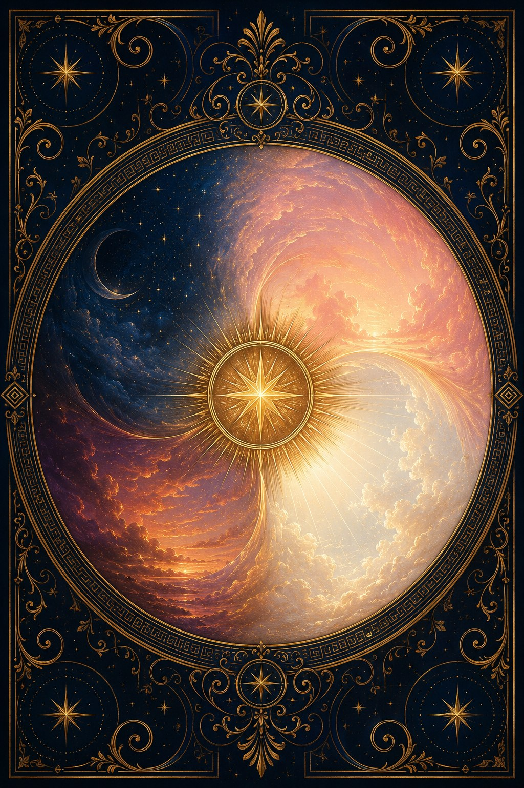

Oracle prédictif sur l'amour

De l'union de la Nuit et des Ténèbres sont nés le Jour et la Lumière.
Héméra voit. Éther ordonne. Nyx garde les secrets.
Avant de tirer
Les divinités parlent à celles et ceux qui se présentent.
Dis ton prénom, puis pose ton intention : la question que ton cœur porte.
Une carte. Une divinité prend la parole sur ce que tu vis. Le geste quotidien.
Quatre cartes, une par phase. L'Aube, le Zénith, le Crépuscule, la Nuit : le cycle complet de ton histoire.